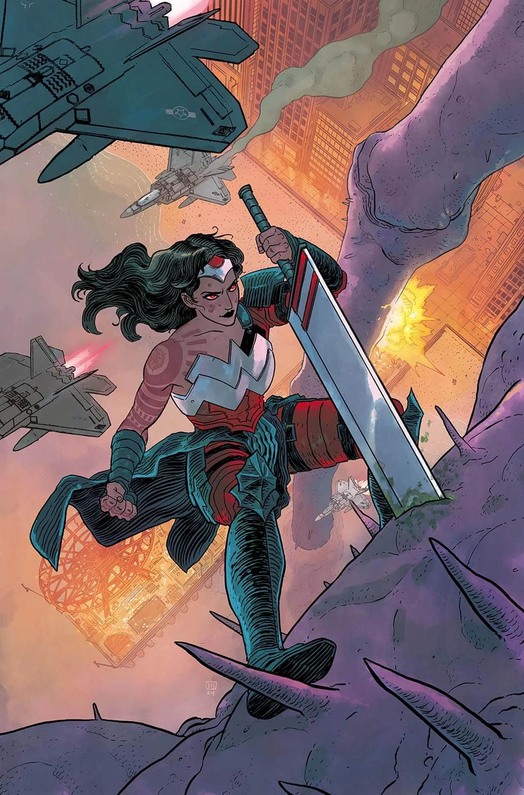

Personagens Secundários
Aliados
-
Nome do aliado
-
Nome do aliado
Adversários
-
Nome do adversário
-
Nome do adversário
Forjada no Inferno e moldada pela dor, Diana não luta apenas por justiça — ela desafia deuses, enfrenta monstros e carrega o destino da humanidade em suas mãos.

Nesta versão do universo Absolute, Diana é uma guerreira criada no Inferno pela feiticeira Circe. Diferente da contraparte tradicional, ela combina força amazona com poderes mágicos poderosos.
Mesmo moldada em um ambiente hostil, Diana mantém um forte senso de compaixão, protegendo a humanidade enquanto enfrenta ameaças sobrenaturais.
No universo Absolute, Diana não cresceu em Themyscira. Ela é filha da rainha Hipólita, criada a partir do barro como o último milagre das Amazonas. No entanto, após um erro cometido por seu povo, os deuses a puniram severamente.
Zeus arrancou Diana de sua terra natal ainda bebê e a enviou para a chamada "Ilha Selvagem do Inferno", onde foi deixada sob os cuidados da feiticeira Circe. Inicialmente indiferente ao destino da criança, Circe acabou acolhendo Diana após perceber sua força extraordinária.
Criada em um ambiente hostil, Diana cresceu enfrentando criaturas, demônios e forças sobrenaturais, desenvolvendo não apenas habilidades de combate, mas também um poderoso domínio da magia. Com o tempo, Circe passou a vê-la como uma filha.
Guiada por forças divinas e visões do destino, Diana foi preparada para se tornar uma guerreira destinada a proteger a humanidade.
Para salvar Steve Trevor, Diana realizou um ritual proibido e sacrificou o próprio braço, marcando o início de sua jornada como protetora do mundo.
Nome do aliado
Nome do aliado
Nome do adversário
Nome do adversário